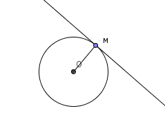
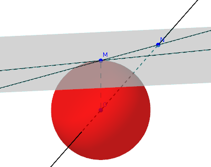
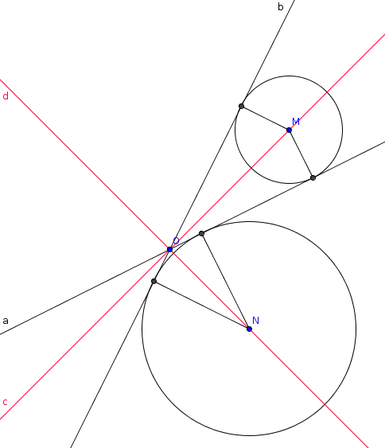
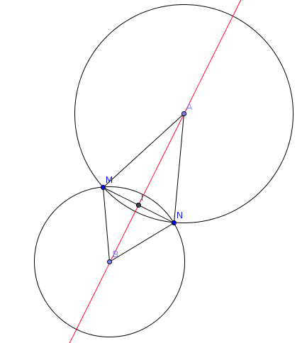
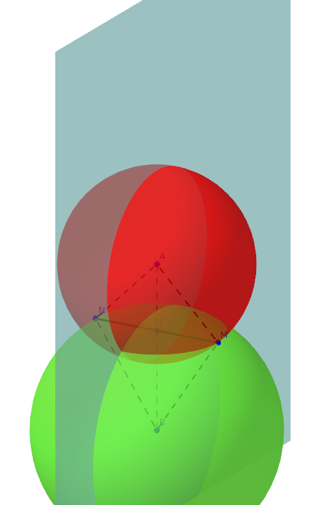

| Choisissez votre langue ! | Choose your language ! |
Boules dans un espace euclidien
Balls in an Euclidean space
Définitions
Il s'agit ici de généraliser les notions planes de cercle et de disque, puis dans l'espace de sphère et de boule, à des espaces de dimensions quelconques.Il existe des mots comme celui "d'hypersphère" mais ils sont peu employés. En fait, suivant une tradition bien établie en topologie nous généralisons les définitions de la dimension 3 à la dimension n en conservant les mêmes appelations. Ainsi :
Definitions
It is a question here of generalizing the plane notions of circle and disk, then in the space of sphere and ball, to spaces of any dimensions.There are words like "hypersphere" but they are rarely used. In fact, following a well-established tradition in topology, we generalize the definitions of dimension 3 to dimension n while keeping the same names. So :
définition 1
Une
'sphère'
(n-dimensionelle) de centre O et de rayon r est l'ensemble des points d'un espace euclidien qui se trouvent exactement à la distance r du point O.
definition 1
An (n-dimensional)
'sphere'
with center O and radius r is the set of points in a Euclidean space which lie exactly at the distance r from the point O.
Une telle sphère se réduit donc à un cercle dans le cas de la dimension 2 et à 2 points en dimension 1.
Such a sphere is therefore reduced to a circle in the case of dimension 2 and to 2 points in dimension 1.
définition 2
Une
'boule ouverte'
(n-dimensionelle) de centre O et de rayon r est l'ensemble des points d'un espace euclidien qui se trouvent à une distance du point O strictement inférieure à r.
definition 2
An (n-dimensional)
'open ball'
with center O and radius r is the set of points in a Euclidean space that lie at a distance from the point O strictly less than r.
Ainsi dans le cas de la dimension 2 une telle boule ouverte correspond à un disque ouvert, et dans le cas de la dimension 1 à un intervalle ouvert.
Thus in the case of dimension 2 such an open ball corresponds to an open disc, and in the case of dimension 1 to an open interval.
définition 3
Une
'boule fermée'
(n-dimensionelle) de centre O et de rayon r est l'ensemble des points d'un espace euclidien qui se trouvent à une distance du point O au plus égale à r.
definition 3
An (n-dimensional)
'closed ball'
with center O and radius r is the set of points in a Euclidean space that lie at a distance from the point O at most equal to r.
La boule fermée est donc la réunion de la boule ouverte et de la sphère.
Signalons tout de suite que :
Signalons tout de suite que :
The closed ball is therefore the union of the open ball and the sphere.
We immediately point out that:
We immediately point out that:
propriété 1
Une sphère coupe une droite en au maximum deux points.
property 1
A sphere intersects a line in at most two points.
Prenons un repère centré en O centre de la sphère.
Les points M(x1, ... ,xn) de la sphère sont caractérisés par x1 2+x2 2+ ... +xn 2=r2 qui est donc l'équation cartésienne de la sphère.
Soit mainetnant D une droite de représentation paramétrique :
xi=ai+λui 1 ≤ i ≤ n
La substitution des xi par leurs valeurs en fonction du paramètre λ donne une équation du second degré en λ qui possède au maximum deux solutions.
Les points M(x1, ... ,xn) de la sphère sont caractérisés par x1 2+x2 2+ ... +xn 2=r2 qui est donc l'équation cartésienne de la sphère.
Soit mainetnant D une droite de représentation paramétrique :
xi=ai+λui 1 ≤ i ≤ n
La substitution des xi par leurs valeurs en fonction du paramètre λ donne une équation du second degré en λ qui possède au maximum deux solutions.
Let us take a frame centered in O center of the sphere.
The points M(x1, ... ,xn) of the sphere are characterized by x< sub>1 2+x2 2+ ... +xn 2=r2 which is therefore the Cartesian equation of the sphere.
Let D be a parametric representation line:
xi=ai+λui 1 ≤ island; n
The substitution of the xi by their values according to the λ gives a quadratic equation in λ which has at most two solutions.
The points M(x1, ... ,xn) of the sphere are characterized by x< sub>1 2+x2 2+ ... +xn 2=r2 which is therefore the Cartesian equation of the sphere.
Let D be a parametric representation line:
xi=ai+λui 1 ≤ island; n
The substitution of the xi by their values according to the λ gives a quadratic equation in λ which has at most two solutions.
définition 4
On dit que la droite D est '
tangente
' à la sphère S en M, si elle ne rencontre S qu'au seul point M.
definition 4
The line D is said to be '
tangent
' to the sphere S at M, if it only meets S at the single point M.
Hyperplan tangent
Soit dans un espace affine euclidien une sphère S de centre O, de rayon r > 0, et soit M un point de cette sphère.Tangent hyperplane
Let in an affine Euclidean space be a sphere S with center O, radius r > 0, and let M be a point on this sphere.définition 5
On appelle
'hyperplan tangent à S en M'
l'hyperplan qui passe par M et qui est orthogonal à (OM).
definition 5
We call
'hyperplane tangent to S in M'
the hyperplane which passes through M and which is orthogonal to (OM).
Cet hyperplan tangent possède quelques propriétés remarquables :
This tangent hyperplane has some remarkable properties:
propriété 2
Si H est l'hyperplan tangent à S en M, alors : - H ne rencontre S qu'au seul point M.
- La sphère S est toute entière du même côté de H.
property 2
If H is the tangent hyperplane to S in M, then: - H only meets S at the single point M.
- The entire sphere S is on the same side of H.
En effet, grâce au théorème de Pythagore si N est un point de H distinct de M on a ON2=OM2+ON2, donc ON > OM = r.
Soit N un point appartenant au demi-espace délimité par H et auquel n'appartient pas O soit K l'intersection de (ON) avec H, alors ON=OK+KO or KO > r donc ON > r.
Soit N un point appartenant au demi-espace délimité par H et auquel n'appartient pas O soit K l'intersection de (ON) avec H, alors ON=OK+KO or KO > r donc ON > r.
Indeed, thanks to the Pythagorean theorem if N is a point of H distinct from M we have ON2=OM2+ON2, so ON > OM=r.
Let N be a point belonging to the half-space delimited by H and to which O does not belong, let K be the intersection of (ON) with H, then ON=OK+KO or KO > r so ON > r.
Let N be a point belonging to the half-space delimited by H and to which O does not belong, let K be the intersection of (ON) with H, then ON=OK+KO or KO > r so ON > r.
propriété 3
Si N est un point quelconque extérieur à la boule fermée B (ON > r), alors la distance de N à B est égale à ON-r, elle est effectivement atteinte en un point et un seul de S, ce point est l'intersection de S avec la droite (ON) située du côté de N par rapport à O.
property 3
If N is any point outside the closed ball B (ON > r), then the distance from N to B is equal to ON-r, it is actually reached at one point and only one of S, this point is the intersection of S with the line (ON) located on the side of N with respect to O.
Soit K l'intersection de (ON) et S situé du même côté de O que N, alors NK=ON-r, ce qui prouve déjà que d(N,B)< NK.
Si maintenant P est un point quelconque de B on a NP ≥ NO-OP ≥ NO -r, ce qui complète notre assertion.
Si maintenant P est un point quelconque de B on a NP ≥ NO-OP ≥ NO -r, ce qui complète notre assertion.
Let K be the intersection of (ON) and S located on the same side of O as N, then NK=ON-r, which already proves that d(N,B)< NK.
If now P is any point of B we have NP ≥ NO-OP ≥ NO -r, which completes our assertion.
If now P is any point of B we have NP ≥ NO-OP ≥ NO -r, which completes our assertion.
propriété 4
Si D est une droite tangente à S en M alors D est toute entière contenue dans l'hyperplan tangent à S en M.
property 4
If D is a line tangent to S at M then D is entirely contained in the hyperplane tangent to S at M.
Plaçons nous en effet dans le plan défini par le point O et la droite D. Ce plan coupe la sphère suivant un cercle de centre O et de rayon r.
Il suffit donc de démonter que dans le cas de la dimension 2 toute droite qui passe par un seul point M d'un cercle est nécessairement orthogonale à (OM).
En effet, si une telle droite n'est pas orthogonale à (OM) soit H la de O sur D, alors OH ≤ r.
Soit N le symétrique de M par rapport à H, alors on a ON=OM donc N est un point de la sphère contrairement à l'hypothèse.
Il suffit donc de démonter que dans le cas de la dimension 2 toute droite qui passe par un seul point M d'un cercle est nécessairement orthogonale à (OM).
En effet, si une telle droite n'est pas orthogonale à (OM) soit H la de O sur D, alors OH ≤ r.
Soit N le symétrique de M par rapport à H, alors on a ON=OM donc N est un point de la sphère contrairement à l'hypothèse.
Illustrations
Droite tangente à un cercle.
Let us place ourselves in the plane defined by the point O and the line D. This plane intersects the sphere along a circle with center O and radius r.
It is therefore enough to disassemble that in the case of dimension 2 any straight line which passes through a single point M of a circle is necessarily orthogonal to (OM).
Indeed, if such a line is not orthogonal to (OM) let H be the of O onto D, then OH ≤ r.
Let N be the mirror image of M with respect to H, then we have ON=OM so N is a point of the sphere contrary to the hypothesis.
It is therefore enough to disassemble that in the case of dimension 2 any straight line which passes through a single point M of a circle is necessarily orthogonal to (OM).
Indeed, if such a line is not orthogonal to (OM) let H be the of O onto D, then OH ≤ r.
Let N be the mirror image of M with respect to H, then we have ON=OM so N is a point of the sphere contrary to the hypothesis.
Illustrations
Line tangent to a circle

Image générée avec GeoGebra2D
Plan tangent à une sphère
Tangent plane to a sphere

Image générée avec GeoGebra3D
Retour sur les hyperplans bissecteurs
Il résulte de la définition des et de la définition des plans tangents que :Back to angle bisector hyperplanes
It follows from the definition of the and from the definition of the tangent planes that :propriété 5
Les hyperplans bissecteurs sont constitués des centres de sphères tangentes aux deux hyperplans de base.
property 5
The angle bisector hyperplanes consist of the centers of spheres tangent to the two base hyperplanes.
Voici une illustration dans le cas du plan :
on a représenté deux droites a et b leurs bissectrices d et c.
on a représenté deux droites a et b leurs bissectrices d et c.
Here is an illustration in the case of the plane:
we have represented two straight lines a and b with their angle bisectors d and c.
we have represented two straight lines a and b with their angle bisectors d and c.

Image générée avec GeoGebra2D
Retour sur les hyperplans médiateurs
Il résulte de la définition de , et de celle des sphères que :Back to perpendicular bisector hyperplanes
It results from the definition of , and from that of the spheres that :propriété 6
L'hyperplan médiateur de [MN] est le lieu géométrique des centres de sphères passant par M et N.
property 6
The perpendicular bisector hyperplane of [MN] is the locus of the centers of spheres passing through M and N.
Voici une illustration dans le cas du plan
Here is an illustration in the case of the plan

Image générée avec GeoGebra2D
Voici une illustration dans le cas de l'espace 3D
Here is an illustration in the case of 3D space

Image générée avec GeoGebra3D
Topologie sur les espaces affines euclidiens
Sur un espace affine euclidien, comme dans nous allons définir des ensembles ouverts, des ensembles fermés, l'intérieur d'un ensemble, son adhérence, etc ..Topology on Euclidean affine spaces
On an affine Euclidean space, as in we will define open sets, closed sets, the interior of a set, its closure, etc..définition 6
Un sous-ensemble de A est dit
'ouvert'
si chaque fois qu'il contient un point M il contient une boule de centre M et de rayon r > 0.
definition 6
A subset of A is said to be
'open'
if each time it contains a point M it contains a ball with center M and radius r > 0.
propriété 7
Les ouverts possèdent les propriétés suivantes : - ∅ et A sont ouverts
- L'intersection d'un nombre fini d'ouverts est encore un ouvert.
- Une réunion quelconque d'ensembles ouverts est encore un ouvert.
property 7
Opens have the following properties: - ∅ and A are open
- The intersection of a finite number of open sets is still an open set.
- Any union of open sets is still an open one.
Tout cela se vérifie instantanément.
All of this can be checked instantly.
définition 7
Un ensemble est dit
'fermé'
si son complémentaire est ouvert.
definition 7
A set is said to be
'closed'
if its complement is open.
On en déduira les propriétés des ensembles fermés.
You will deduce the properties of closed sets.
définition 8
Un ensemble X est un
'voisinage'
d'un point M s'il contient un ouvert contenant M.
definition 8
A set X is a
'neighborhood'
of a point M if it contains an open containing M.
définition 9
"L'intérieur"
d'un ensemble X est la réunion de tous les ouverts contenus dans X c'est donc le plus grand ouvert contenu dans X.
definition 9
"The interior"
of a set X is the union of all the open sets contained in X, so it is the largest open set contained in X.
définition 10
"L'adhérence"
d'un ensemble X est l'intersection de tous les fermés contenant X, c'est le plus petit fermé contenant X.
definition 10
"The closure"
of a set X is the intersection of all closed sets containing X, it is the smallest closed set containing X.
définition 11
La
'frontière'
d'un ensemble X est l'intersection de l'adhérence de X avec l'adhérence de son complémentaire.
definition 11
The
'boundary'
of a set X is the intersection of the closure of X with the closure of its complement.
|
Création Gilles Dubois - licence CC-BY-SA
Created by Gilles Dubois - licence CC-BY-SA
|
Septembre 2023
September 2023
|
Version mobile Jquery
Mobile Jquery version
|
|